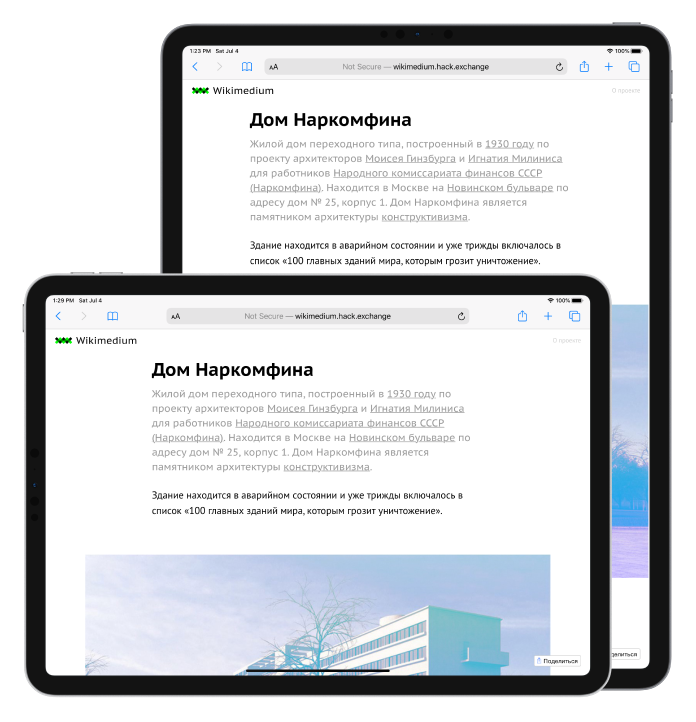

Наглядный пример, чтобы учиться веб-верстки
Разработан дл изучения основ веб-верстки, языка гипертекстовой разметки HTML и каскадных таблиц стилей CSS


С нуля до первого сайта под компьютеры, смартфоны и планеты
Чтобы начать изучать веб-верстку на этом проекте, не требуется каких-то специальных знаний, кроме базового умения пользоваться компютером
Реальный проект, реальный процесс
Обучение приближено к работе в реальной жизни, работа разбита на этапы от типографики, создания и использования эффектов, до адаптации под мобильное устройство и использования